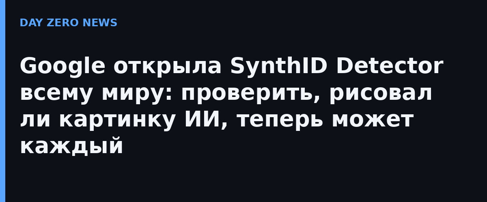

7 октября Google DeepMind объявила, что SynthID Detector — портал проверки контента на водяные знаки SynthID — доступен глобально на английском языке любому пользователю. Раньше инструмент был в закрытой версии для журналистов и медиапрофессионалов. Загрузив на synthid.com картинку, ролик или звуковой файл, можно узнать, сгенерировано ли оно ИИ-моделями Google или партнёров: OpenAI, NVIDIA, Kakao, а в скором времени — Apple.
SynthID работает с 2023 года и вшит в выходные данных генеративных моделей (Gemini/Veo/Nano Banana и др.). К октябрю 2026-го Google провела водяные знаки более чем через 180 миллиардов изображений и видео и 240 тысяч лет аудиоконтента. Встроенная проверка в Search, Gemini и Chrome уже обрабатывает свыше миллиона запросов в день. В анонсе компания честно предупреждает: инструмент определяет только контент с watermark-ом SynthID и не даёт 100% гарантии — deepfake без фирменного знака он не поймает.
Это часть более широкой гонки за «маркировку ИИ»: Google параллельно развивает отраслевой стандарт C2PA Content Credentials (с сентября Pixel-смартфоны фиксируют подлинность съёмки прямо в камере), а текстовый водяной знак SynthID компания ранее открыла в исходниках. Партнёрство с OpenAI, NVIDIA и Kakao превращает де-факто проприетарный механизм в отраслевую систему верификации.
Требование помечать контент, созданный искусственным интеллектом, в России действует с 1 сентября 2024 года — соответствующие поправки в закон «Об информации» обязывают указывать, что материал сгенерирован ИИ-системой. Инструментов массовой проверки вроде SynthID Detector публично не анонсировалось: акцент у нас сделан на обязательной разметке со стороны распространителя, а не на детекции со стороны пользователя.